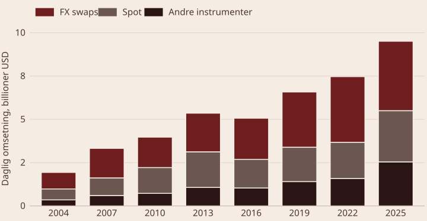
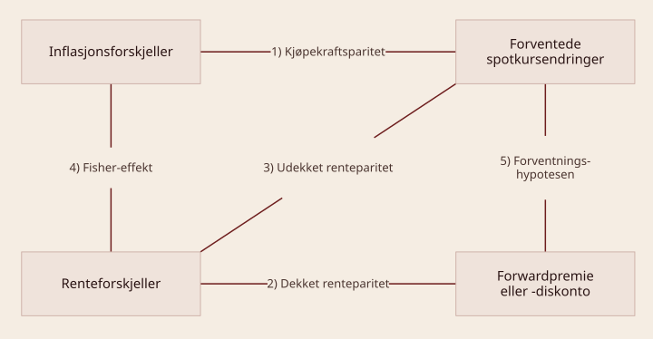
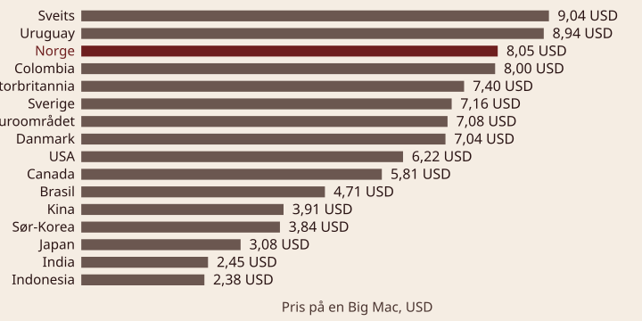

BED3 — Investering og finans · Forelesning 16
Norges Handelshøyskole
Forbruk, produksjon, investeringer og kapitalmarkeder er globalisert. Derfor har internasjonal finans — også kalt internasjonal monetær økonomi — blitt et viktig felt.
Definisjon — internasjonal finans Omhandler penge- og makroøkonomiske relasjoner mellom land.

Daglig omsetning i valutamarkedet, målt i billioner amerikanske dollar, per undersøkelsesår. FX swaps og spot vises hver for seg; «andre instrumenter» samler rene terminkontrakter (outright forwards), valutaswapper og opsjoner, som hver for seg er for små til egen søyle. Én billion er tusen milliarder (10¹²) — det norske talordet, ikke det engelske billion (10⁹).
Kilde: BIS Triennial Central Bank Survey, «OTC foreign exchange turnover».
Hvordan vi måler og sammenligner verdien av valuta
Definisjon — valutakurs En valutakurs angir hvor mye én valuta er verdt i en annen valuta, og er avgjørende for internasjonal handel, investeringer og økonomisk stabilitet.
Hvorfor er valutakursnoteringer viktige?
Valutakurser uttrykkes som forholdet mellom to valutaer, der én valuta er basevaluta og den andre er kvotevaluta. Notasjonen påvirker hvordan valutakursen tolkes. Vi priser dollar i norske kroner:
\begin{aligned} &\underbrace{\text{USD}}_{\small\text{basevaluta}} \;/\; \underbrace{\text{NOK}}_{\small\text{kvotevaluta}} \;=\; \underbrace{10}_{\small\text{norske kroner per dollar}} \\[6pt] &\text{direkte notering} \;=\; \frac{1}{\text{indirekte notering}} \end{aligned}
Viktige begreper
Eksempler
Definisjon — spot- og forwardkurs Spotkursen er prisen på en valuta for umiddelbar levering, mens forwardkursen er en avtalt pris for framtidig kjøp eller salg av en valuta.
Definisjon — forwardpremie og forwarddiskonto En valuta handles til en forwardpremie hvis forwardkursen er høyere enn spotkursen. Er forwardkursen lavere enn spotkursen, handles valutaen til en forwarddiskonto.
Hva betyr dette?
Eksempel
\text{forwardpremie (diskonto)} = \frac{F - S}{S} \cdot 100\ \% = \frac{10{,}20 - 10{,}00}{10{,}00} \cdot 100\ \% = 2\ \%
USD handles altså til en forwardpremie på 2 % over tre måneder. Med enkel beregning blir den årlige forwardpremien 2\ \% \cdot \tfrac{12}{3} = 8\ \%.
Valutakurser brukes daglig av bedrifter, investorer og myndigheter til å håndtere internasjonale transaksjoner, investeringer og økonomisk politikk.
Hvordan påvirker valutakurser ulike aktører?
Eksempler
Sammenheng med tidligere temaer
Q1: Hva er forskjellen mellom direkte og indirekte notering av valutakurser? Direkte notering viser hvor mye hjemmevaluta som kreves for én enhet utenlandsk valuta. Indirekte notering viser hvor mye utenlandsk valuta man får for én enhet hjemmevaluta.
Q2: Hvis USD/NOK = 11,50, hva er da NOK/USD? NOK/USD = \frac{1}{11{,}50} \approx 0{,}0870.
Q3: En bedrift i Norge planlegger å importere varer fra USA om seks måneder. Spotkursen er USD/NOK = 10,20, og forwardkursen for seks måneder er USD/NOK = 10,50. Hva betyr dette for bedriften, og hva kan den gjøre for å redusere risikoen? Forwardkursen er høyere enn spotkursen, så USD handles til en forwardpremie, og importen blir dyrere om seks måneder. For å redusere risikoen kan bedriften inngå en forwardkontrakt til kursen 10,50 i dag, slik at valutakursen er låst.
Sammenhenger mellom valutakurser, inflasjon og renter
Paritetsbetingelser beskriver hvordan valutakurser, renter og inflasjon påvirker hverandre i internasjonale finansmarkeder. De gir et rammeverk for å forstå prisdannelse og kapitalbevegelser mellom land.
Hvorfor er dette viktig?
Hvilke sammenhenger skal vi se på?

Definisjon — kjøpekraftsparitet Kjøpekraftsparitet (engelsk purchasing power parity, PPP) sier at valutakurser justerer seg slik at samme vare koster det samme i ulike land når prisen måles i en felles valuta. Absolutt kjøpekraftsparitet sier at prisnivået i to land skal være likt når det måles i samme valuta.
En prissammenligning av én standardisert vare på tvers av land er den vanligste illustrasjonen av absolutt kjøpekraftsparitet.

Utvalg på 16 av 54 land. Norge er nummer tre i verden og ligger om lag 29 % over USA. Prisforskjellen mellom dyreste og billigste land er nær fire ganger — absolutt kjøpekraftsparitet holder altså ikke.
Kilde: The Economist, Big Mac-indeksen, juli 2026. Data under CC BY 4.0.
Definisjon — relativ kjøpekraftsparitet Kjøpekraften i to land skal holde seg konstant. Den relative kjøpekraften påvirkes ikke av inflasjon, fordi valutakursene justerer seg for å reflektere inflasjonsforskjeller mellom land.
\frac{E(s_{\text{UTL/NOK}})}{s_{\text{UTL/NOK}}} = \frac{E(1 + i_{\text{NOK}})}{E(1 + i_{\text{UTL}})}
Holder kjøpekraftspariteten?
Eksempel — forventet spotkurs s_{\text{UTL/NOK}} = 5{,}50 · i_{\text{NOK}} = 2{,}5\ \% · i_{\text{UTL}} = 3{,}0\ \%. Hva er forventet spotkurs om ett år ifølge kjøpekraftspariteten?
\begin{aligned} \text{forventet valutakursendring:} \quad & \frac{1{,}025}{1{,}03} - 1 \approx -0{,}49\ \% \\ \text{forventet valutakurs:} \quad & 5{,}50 \cdot (1 - 0{,}0049) \approx 5{,}473 \\ \text{kontroll:} \quad & \frac{5{,}473}{5{,}50} \approx 0{,}9951 \approx \frac{1{,}025}{1{,}03} \end{aligned}
Om ett år forventer vi altså at den utenlandske valutaen har svekket seg mot den norske kronen, siden forventet spotkurs om ett år er lavere enn dagens pris. Da kan vi kjøpe flere enheter utenlandsk valuta for samme beløp som i dag.
Intuisjonen er at når et land har høyere inflasjon enn et annet, øker utlandets pengemengde relativt sett mer enn hjemlandets. En relativt sett høyere pengemengde må også bety at hver enhet av utlandets valuta er mindre verdt.
Definisjon — dekket renteparitet Dekket renteparitet (engelsk covered interest parity, CIP) sier at to investeringer med samme risiko må ha samme forventede avkastning. Hvis ikke, ville det være mulig å sikre seg en arbitrasjegevinst, og det kan vi ikke forvente i velfungerende markeder. Valutamarkedet er derfor i likevekt når renteforskjellen mellom to land nøytraliseres av forwardkursen: det skal ikke være mulig å oppnå risikofri arbitrasje ved å veksle penger mellom valutaer og plassere dem i rentebærende verdipapirer.
\frac{1 + r_{\text{NOK}}}{1 + r_{\text{UTL}}} = \frac{f_{\text{UTL/NOK}}}{s_{\text{UTL/NOK}}}
Holder dekket renteparitet?
Eksempel — betale utenlandsgjeld Anta at du bor i Norge, men har en gjeld på én million pund som skal betales i pund om ett år. Hvis vi ikke ønsker å utsette oss for at vekslingskursen skal gå i vår disfavør det neste året, kan vi:
Siden begge alternativene er risikofrie og gir den samme kontantstrømmen, er de likeverdige. Dekket renteparitet er altså en sterk kobling som vi antar kan holde. Den har også paralleller til lagringskostnadshypotesen fra forklaringen av terminpriser.
Eksempel — forwardkurser og renter ett år fram s_{\text{UTL/NOK}} = 5{,}50 · f_{\text{UTL/NOK}} = 5{,}553 · r_{\text{NOK}} = 5{,}0\ \% · r_{\text{UTL}} = 4{,}0\ \%
1)
\frac{1 + r_{\text{NOK}}}{1 + r_{\text{UTL}}} = \frac{f_{\text{UTL/NOK}}}{s_{\text{UTL/NOK}}} = \frac{1{,}05}{1{,}04} \approx \frac{5{,}553}{5{,}50} \approx 1{,}0096
Utnytte feilprisingen
Er f_{\text{UTL/NOK}} = 5{,}70, er forwardkursen for høy: vi får for lite utenlandsk valuta om ett år. Det indikerer at renten i Norge er for lav til å øke etterspørselen etter NOK og styrke kronen, samtidig som utenlandsrenten er relativt høy.
For å utnytte arbitrasjen låner vi i NOK til den lave norske renten og investerer i utlandet der renten er høyere. Samtidig selger vi utenlandsk valuta forward, siden den er overpriset og kronen undervurdert.
Arbitrasjegevinsten tilsvarer forwardposisjonen i UTL multiplisert med graden av feilprising: 104\,000 \cdot (5{,}70 - 5{,}553) \approx 15\,300. Korrekt forwardkurs gir følgelig ingen arbitrasjegevinst.
Definisjon — udekket renteparitet To like investeringer må ha samme forventede avkastning, men nå forutsettes det ingen systematisk valutakursusikkerhet.
\frac{1 + r_{\text{NOK}}}{1 + r_{\text{UTL}}} = \frac{E(s_{\text{UTL/NOK}})}{s_{\text{UTL/NOK}}} \qquad r = \text{rente}
Holder udekket renteparitet?
\frac{1 + r_{\text{NOK}}}{1 + r_{\text{UTL}}} = \frac{E(1 + i_{\text{NOK}})}{E(1 + i_{\text{UTL}})}
\frac{f_{\text{UTL/NOK}}}{s_{\text{UTL/NOK}}} = \frac{E(s_{\text{UTL/NOK}})}{s_{\text{UTL/NOK}}} \;\Rightarrow\; f_{\text{UTL/NOK}} = E(s_{\text{UTL/NOK}})
Q4: Hva er hovedforskjellen mellom absolutt og relativ kjøpekraftsparitet (PPP)? Absolutt PPP sier at varer skal koste det samme i alle land målt i en felles valuta. Relativ PPP sier at endringer i valutakurser over tid skyldes inflasjonsforskjeller mellom land.
Q5: Spotkursen for EUR/NOK er 11. Forwardkursen for seks måneder er 11,30, mens rentene er 3 % i Norge og 1 % i eurosonen. Holder dekket renteparitet (CIP)?
For at CIP skal holde, må forwardkursen følge
F = S \cdot \frac{1 + i_{\text{hjem}}}{1 + i_{\text{utland}}} = 11 \cdot \frac{1{,}03}{1{,}01} = 11{,}22
Faktisk forwardkurs er 11,30 og ikke 11,22. Det er altså et avvik, som kan indikere en arbitrasjemulighet.
Q6: En norsk investor vurderer å plassere penger i enten Norge eller USA. Den nominelle renten er 5 % i Norge og 7 % i USA. Hvis inflasjonen er 2 % i begge land, hvilken valuta forventes å svekke seg ifølge Fisher-effekten?
Ifølge Fisher-effekten er forventet realrente lik nominell rente minus inflasjon, r = i - \pi. For Norge: 5\ \% - 2\ \% = 3\ \%. For USA: 7\ \% - 2\ \% = 5\ \%.
Siden realrenten er høyere i USA, blir USA et mer attraktivt marked, noe som kan gi kapitalstrømmer inn i USD. Dominerer kapitalbevegelsene valutamarkedet, kan NOK svekke seg mot USD.
Valutarisiko, finansieringsvalg og kapitalstrømmer
To tilnærminger for å beregne netto nåverdi:
Metode 1
Metode 2
Konsistent brukt skal de to metodene gi samme netto nåverdi. Det innebærer at renten hjemme og ute bestemmer forholdet mellom avkastningskravene:
1 + k_{\text{NOK}} = (1 + k_{\text{UTL}}) \cdot \frac{1 + r_{\text{NOK}}}{1 + r_{\text{UTL}}}
Dette er en forenkling: andre aktuelle risikokilder, for eksempel politisk risiko, inngår ikke.
Eksempel — internasjonalt investeringsprosjekt Kontantstrøm i utenlandsk valuta: \{-3\,000,\; 1\,400,\; 1\,400,\; 1\,800\}
s_{\text{UTL/NOK}} = 5{,}50 · r_{\text{NOK}} = 5{,}0\ \% · r_{\text{UTL}} = 4{,}0\ \% · k_{\text{UTL}} = 10\ \%
Metode 1 — begynner med å beregne NPV_{\text{UTL}}:
\begin{aligned} NPV_{\text{UTL}} &= -3\,000 + \frac{1\,400}{1{,}10} + \frac{1\,400}{1{,}10^{2}} + \frac{1\,800}{1{,}10^{3}} \approx 782 \\ NPV_{\text{NOK}} &= 782 \cdot 5{,}50 \approx 4\,301 \approx 4{,}3 \text{ NOKm} \end{aligned}
Metode 2 — gjør om alle kontantstrømmer til NOK:
\begin{aligned} s_{\text{UTL/NOK},1} &= 5{,}50 \cdot \tfrac{1{,}05}{1{,}04} \approx 5{,}553 & s_{\text{UTL/NOK},2} &= 5{,}553 \cdot \tfrac{1{,}05}{1{,}04} \approx 5{,}606 \\ s_{\text{UTL/NOK},3} &= 5{,}606 \cdot \tfrac{1{,}05}{1{,}04} \approx 5{,}660 & k_{\text{NOK}} &= 1{,}10 \cdot \tfrac{1{,}050}{1{,}040} - 1 \approx 11{,}1\ \% \end{aligned}
NPV_{\text{NOK}} = -16\,500 + \frac{7\,774}{1{,}111} + \frac{7\,848}{1{,}111^{2}} + \frac{10\,188}{1{,}111^{3}} \approx 4{,}3 \text{ NOKm}
Vi får altså samme netto nåverdi i NOK, fordi udekket renteparitet legges til grunn både når valutakursene og når NOK-avkastningskravet beregnes.
\begin{aligned} \text{hjemmelån:} \quad & r_{\text{NOK}} && (\text{sikkert}) \\ \text{valutalån:} \quad & \frac{s_{\text{UTL/NOK},1}}{s_{\text{UTL/NOK},0}} \cdot (1 + r_{\text{UTL}}) && (\text{usikkert}) \end{aligned}
Bedrifter og investorer kan velge å ta opp lån i en annen valuta enn hjemlandets. Det kan gi kostnadsfordeler, men innebærer også valutarisiko.
Hvorfor ta opp lån i utenlandsk valuta?
Risikokilder
Eksempel
Hvordan håndtere valutarisikoen?
Eksempel — ettårig utenlandsk lån s_{\text{UTL/NOK}} = 5{,}50 · r_{\text{NOK}} = 6{,}0\ \% · r_{\text{UTL}} = 3{,}0\ \%. Anta at du låner 1,65 millioner NOK i ett år.
Når vi forventer å betale tilbake det samme beløpet i begge scenarioer, må også den totale lånekostnaden være lik, tross lavere rente i utlandet: (5{,}66 / 5{,}50) \cdot 1{,}030 - 1 \approx 6{,}0\ \%. Å velge valutalån er spekulasjon i gunstige valutakursendringer.
Kort sikt: NOK styrkes
Oppsummert
Lang sikt: markedskreftene svekker NOK
Regnskapsmessig eksponering
Økonomisk eksponering
Transaksjonseksponering
Sikringspolitikk og -strategier ved transaksjonseksponering
Valutarisiko oppstår når bedrifter eller investorer er eksponert mot svingninger i valutakurser.
Transaksjonsrisiko
Regnskapsmessig risiko
Økonomisk risiko
Q7: Hva er hovedforskjellen mellom transaksjonsrisiko og økonomisk risiko i valutamarkedet? Transaksjonsrisiko er knyttet til bestemte kontraktsfestede betalinger i fremmed valuta. Økonomisk risiko handler om hvordan valutakursendringer påvirker et selskaps langsiktige konkurranseevne og inntjening.
Q8: Et norsk selskap vurderer å låne 10 millioner NOK i enten NOK eller USD. Renten er 5 % i Norge og 3 % i USA, og dagens valutakurs er USD/NOK = 10. Hva må selskapet vurdere før det velger lånevaluta? Risikokostnaden: USD-lånet har lavere rente, men innebærer valutarisiko. Forventet valutakursendring: svekkes NOK mot USD, blir tilbakebetalingen dyrere. Sikringsmuligheter: kan selskapet sikre valutarisikoen med forwardkontrakter? Naturlig sikring: har selskapet inntekter i USD som kan betjene lånet?
Q9: En eksportbedrift får betalt i EUR, men har kostnader i NOK. Hvilken sikringsstrategi kan den bruke for å redusere valutarisikoen?
1. Internasjonal finans og valutakursnoteringer
2. Internasjonale paritetsbetingelser
3. Internasjonale investeringer og lån
4. Valutakursusikkerhet og sikringsstrategier